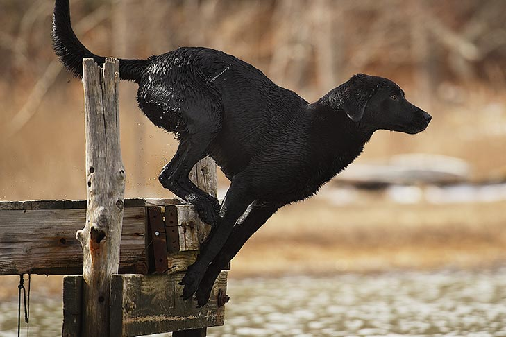

|
Golden Retriever |
They can live for 10-12 years
Can grow up to 23-24 inches for male and 21-22 inches for female |
|  |
Labrador Retriever |
They can live for 11-13 years
Can grow up to 22-24 inches for male and 21-23 inches for female |
|
Shiba Inu |
They can live for 13-16 years
Can grow up to 14-16 inches for male and 13-15 inches for female |
 |
Siberian Husky |
They can live for 12-14 years
Can grow up to 20-22 inches for male and 13-15 inches for female |
|
Pomeranian |
They can live for 12-16 years
Can grow up to 6-7 inches for male and 6-7 inches for female |